當玻璃反射出周遭景物，會誤以為是可飛行空間


Have
You
Seen
?
你有看到嗎？
Bird-window collisions happen when birds fail to perceive glass and hit it at full speed,
resulting in fatal injuries such as internal hemorrhaging or broken bones.


當玻璃反射出周遭景物，會誤以為是可飛行空間


當玻璃透出後方的空間感時
鳥類往往會誤認而直接衝撞上去
Have you realized that the number of these birds is gradually decreasing?



Individual differences exist between bird species prone to collisions in Taiwan and those in other regions.
5x10原則
在玻璃上標記寬五公分、長十公分
間隔可以減少90%以上的窗殺發生率
(點不可小於0.5公分)

Bird-window collisions happen when birds fail to perceive glass and hit it atBird-window collisions happen when birds fail to perceive glass and hit it at full speed, resulting in fatal injuries such as internal hemorrhaging or broken bones.